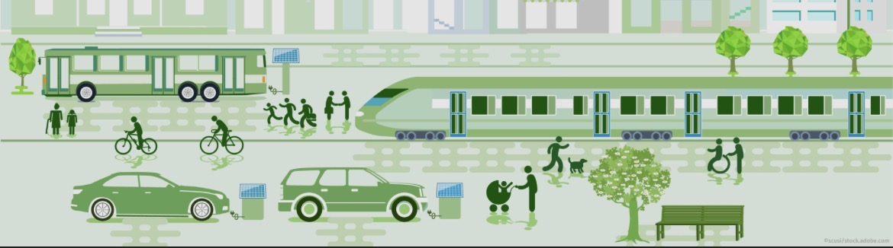

Fakten
Allgemeine Fakten über Nachhaltigkeit
-
- Nachhaltigkeit bedeutet, natürliche Ressourcen so zu nutzen, dass sie auch für zukünftige Generationen erhalten bleiben.
- Sie umfasst ökologische, ökonomische und soziale Aspekte – also Umweltschutz, Wirtschaftlichkeit und gesellschaftliche Verantwortung.
- Klimaschutz, Ressourcenschonung, Abfallvermeidung und der Einsatz erneuerbarer Energien sind zentrale Elemente nachhaltigen Handelns.
- Nachhaltiges Handeln betrifft sowohl den Einzelnen als auch Unternehmen, Städte und Regierungen.
Allgemeine Fakten über Nachhaltigkeit im Straßenverkehr:
-
- Der Straßenverkehr ist einer der größten Verursacher von CO₂-Emissionen weltweit.
- In Deutschland stammen rund 20 % der gesamten Treibhausgasemissionen aus dem Verkehr.
- Der Großteil dieser Emissionen wird durch Pkw verursacht.
- Nachhaltiger Verkehr bedeutet, Ressourcen zu schonen, die Umwelt zu schützen und Energie effizient zu nutzen.
- Öffentliche Verkehrsmittel verursachen pro Person deutlich weniger Emissionen als Individualverkehr mit dem Auto.
CO₂-Rechner für deinen Schulweg
Berechne, wie viel CO₂ du pro Woche auf deinem Schulweg verursachst – je nach Verkehrsmittel.
Quelle: Umweltbundesamt (UBA), 2023